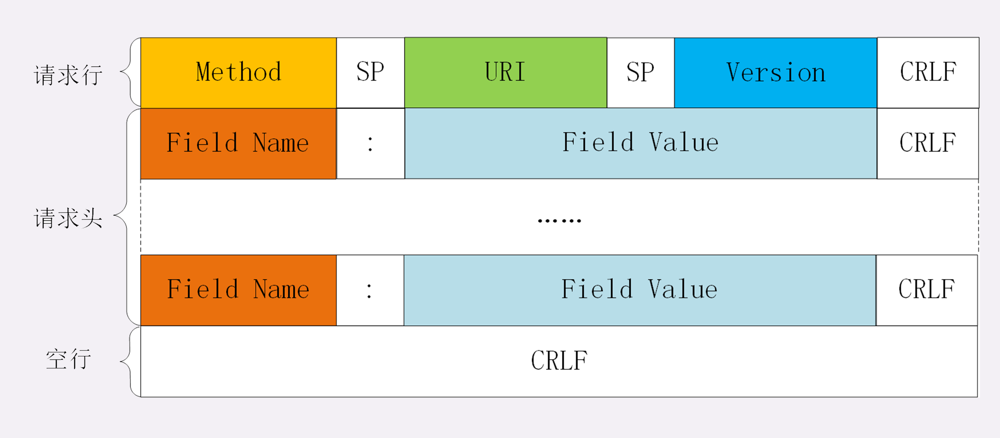
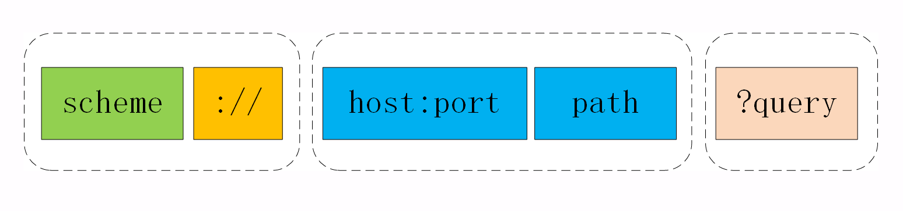

身为一个前端，HTTP 对我而言就像是云雾环绕的一座山，看不透也不知从哪开始攀登。深入学习 HTTP 协议系列就是我对罗剑锋老师的《透视 HTTP 协议》所做的总结。希望能对大家的登山之旅有所帮助。
当我们在浏览器地址栏输入网址再按下回车发生了什么？
- 浏览器发起域名解析获取地址对应的 IP；
- 浏览器用 TCP 的三次握手与服务器建立连接；
- 浏览器向服务器发送拼好的报文；
- 服务器收到报文后处理请求，同样拼好报文再发给浏览器；
- 浏览器解析报文，渲染输出页面。
域名解析的过程中有多级缓存，浏览器先查看自身缓存，没有再向操作系统缓存要，还没有就检查本机域名解析文件 hosts，最后则会用 DNS 域名解析系统进行。在这个过程中可能会经历 CDN 解析，拿到 CDN 服务器的地址
在达到目标服务器后，通常会经历负载均衡设备，负载均衡设备会访问系统里的缓存服务器，通常有 memory 级缓存 Redis 和 disk 级缓存 Varnish。
如果缓存服务器里没有所要数据，就会把请求转发给应用服务器，例如 Java 的 Tomcat/Netty/Jetty，Python 的 Django，还有 PHP、Node.js、Golang 等等。然应用服务器处理完成后把执行的结果返回给负载均衡设备。
到达负载均衡后请求的处理就完成了，会按照请求顺序原路返回。
HTTP 协议的核心部分 - HTTP 报文
报文结构
HTTP 协议的请求报文和响应报文的结构由三大部分组成
- 起始行（start line）：描述请求或相应的基本信息；
- 头部字段集合（header）：key-value 的形式；
- 消息正文（entity）：实际传输数据。
其中前两部分经常被称为 请求头/响应头，正文部分称为body。
HTTP 协议规定报文必须有 header，可以没有 body，在 header 和 body 之间必须有一个空行，如下图所示。

抓包分析

图中 1，第一行为请求行部分。2，为 header 部分，3 是空白行部分。这里没有发送 body，所以没有 body 信息。
请求行
报文的起始行就是请求行，它简要的描述了客户端想要如何操作服务器端的资源。
1 | GET / HTTP / 1.1; |
在抓包获取的信息中，我们可以看到请求头由三部分组成：
- 请求方法，表示对资源的操作，对应上面代码中的 GET，；
- 请求目标，通常是一个 URI，表记录请求方法要操作的资源，对应
/； - 版本号：表示报文使用的 HTTP 协议版本，对应
HTTP/1.1。
这三个部分通常用空格来分隔，最后用 CRLF 换行表示结束，用图片来描述就是下面这个方式。

状态行
服务器响应报文里的起始行叫做状态行，表示服务器响应的状态。
1 | HTTP/1.1 200 OK |
也由三部分组成：
- 版本号，表示报文使用的 HTTP 协议版本号；
- 状态码，表示处理结果，如 200 成功，500 服务器错误；
- 原因：作为数字状态码的补充，在上面代码是
OK。
它的组成规则和请求行一致，用空格来分隔，用 CRLF 换行表示结束，如下图所示。

头部字段（header）
请求行/状态行加上头部字段（header），就组成了请求头/响应头。
如下图所示：

头部字段是 key-value 的形式，之间用 ： 分隔，最后用 CRLF 换行表示结束。
注意：
- 字段不区分大小写，不允许出现下划线
_，可以使用短横线-连接。 - key 后面紧跟
:，不能有空格。但是:和 value 之间可以出现空格。 - 字段的顺序是无意义的。
- 字段原则上不能出现重复，除非字段本身语义允许，如 Set-Cookie。
- 在请求头/响应头中只有
Host字段是必须的。
HTTP 请求方法
标准请求方法
- GET：获取资源，可以理解为读取或者下载数据；
- HEAD：获取资源的元信息；POST：向资源提交数据，相当于写入或上传数据；
- PUT：类似 POST；DELETE：删除资源；
- CONNECT：建立特殊的连接隧道；
- OPTIONS：列出可对资源实行的方法；
- TRACE：追踪请求 - 响应的传输路径。

常用方法
GET 和 HEAD
GET 的含义是从服务器获取资源，可以搭配 URI 和其他头部字段实现对资源更精细的操作。
HEAD 的含义与 GET 类似，都是从服务器获取资源，服务器处理机制也一样，但服务器不会返回请求的实体数据，只会传回响应头，也就是资源的“元信息”。可以将他看做 GET 的简化版。
POST 和 PUT
POST 和 PUT 是指向 URI 指定资源提交数据，而 POST 和 PUT 的区别在于 POST 意味着“新建”，PUT 则是 “修改”。
其他方法
DELETE：指示服务器删除资源。
CONNECT：要求服务器为客户端和另一台远程服务器建立一条通道，浏览器充当代理角色。
OPTIONS：要求服务器列出可对资源实行的请求方法。
TRACE：用于对 HTTP 链路的测试或诊断。
安全和幂等
安全在 HTTP 协议里是指请求方法不会修改服务器上的资源。所以只有 GET 和 HEAD 是安全的，因为它们对资源进行是只读操作。
幂等意思是多次执行相同操作，结果也都是相同的，即多次“幂”后“相等”。
可以看出 GET 和 HEAD 既是安全的也是幂等的，DELETE 是幂等的，POST 和 PUT 既不安全也不幂等。
URI 与 网址
URI：统一资源标识符，包括 URL 和 URN 两部分。
URL：统一资源定位符，就是我们俗称的“网络地址”，因为 URL 十分普遍，所以通常用 URL 表示 URL 或 URI。
URL 格式
URL 本质上是一个字符串，它的作用是 唯一的标记资源的位置或者名字。它不仅能标记万维网资源，还能标记动态服务资源或者本地资源。
它的组成部分如下图所示：由 scheme、host:port、path 和 query 组成。

URI 的第一个组成部分是 scheme 代表协议名，表示资源应该用那种协议访问（如：http、ftp、file）。
scheme 之后就是固定的三个字符“**://**”，用来把 scheme 和后面的部分分离开。
“**://”之后是 **authority 部分，表示资源所在的主机名，通常形式是 host:port ，即主机名加端口号。主机名必须要有，可以是 IP 地址或域名。端口号可以省略，浏览器等客户端会根据 scheme 使用默认的端口号，例如 HTTP 默认的是 80，HTTPS 默认的是 443。
path 是用来标记资源所在位置。path 采用的是类似路径的表示方式，URI 的 path 必须要以 “/” 开始。
看下面这个例子
1 | https://tools.ietf.org/html/rfc7230 |
https 是 scheme，表示使用的是 https 协议，tools.ietf.org 就是主机名，这里默认访问端口号是 443，路径就是后面的 /html/rfc7230。
URI 的查询参数 query
在上图 URL path 后还有一个 query 部分，query 由一个“?”开始，但不包含“?”，表示对资源附加的额外要求。
query 的格式是由 多个 “key=value” 组成，多个 “key=value” 之间用 “&” 连接。
URI 的编码
URI 中只能使用 ASCII 码，对于英语以外的汉语、日语及其他字符 URI 会对他们进行 encodeURI 转义。
转义规则是，把字符（unicode）编码成 utf-8，utf-8 是用 1-4 个字节表示的，所以每个字节转换成 16 进制并在前面用百分号（%）连接，最后并把每个字节转换的结果连接起来。
响应状态码
五类状态码
RFC 标准把状态码分成了以下五类
- 1××：提示信息，表示目前是协议处理的中间状态，还需要后续的操作；
- 2××：成功，报文已经收到并被正确处理；
- 3××：重定向，资源位置发生变动，需要客户端重新发送请求；
- 4××：客户端错误，请求报文有误，服务器无法处理；
- 5××：服务器错误，服务器在处理请求时内部发生了错误。
常见响应状态码及含义
- 1xx
- 101 Switching Protocols，客户端要求服务端改成其他协议继续通信，如果服务器统一变更协议，就会返回状态码 101.
- 2xx
- 200 OK，表示请求成功，通常在响应头后会有 body 数据。
- 204 No Content，也表示请求成功，它与 200 的区别在于，响应头后没有 body 数据。
- 206 Partial Content，常见于获取请求资源的部分数据。“Content-Range”，表示 body 里返回数据的具体范围。
- 3xx
- 301 Moved Permanently，表示永久重定向。
- 302 Found，表示临时重定向，浏览器不会对临时重定向的内容做缓存优化。
- 304 Not Modified，缓存重定向，用户缓存控制，URL 不包含跳转含义。
- 4xx
- 400 Bad Request，表示请求错误。
- 403 Forbidden，表示服务器禁止访问资源。
- 404 Not Found，表示资源在服务器上未找到。
- 5xx
- 500 Internal Server Error，表示服务器发生错误，是一个较通用的错误码。
- 502 Bad Gateway，表示服务器禁止访问资源。
- 503 Service Unavailable，表示服务器正忙，暂时无法响应。
HTTP 的特点和优缺点
五大特点
- HTTP 是灵活可扩展的，可以任意添加头字段实现任意功能；
- HTTP 是可靠传输协议，基于 TCP/IP 协议“尽量”保证数据的送达；
- HTTP 是应用层协议，比 FTP、SSH 等更通用功能更多，能够传输任意数据；
- HTTP 使用了请求 - 应答模式，客户端主动发起请求，服务器被动回复请求；
- HTTP 本质上是无状态的，每个请求都是互相独立、毫无关联的，协议不要求客户端或服务器记录请求相关的信息。
优缺点
优点：
- 灵活可拓展；
- 应用广泛，环境成熟；
- 无状态，不需要额外资源来记录路状态信息，减轻服务器负担；
- 明文传输，数据可直接查看到，方便开发调试。
缺点：
- 无状态，每次访问都要获取一遍身份信息；
- 明文传输，数据容易被截取；
- 不安全，数据在传输过程中容易被篡改。